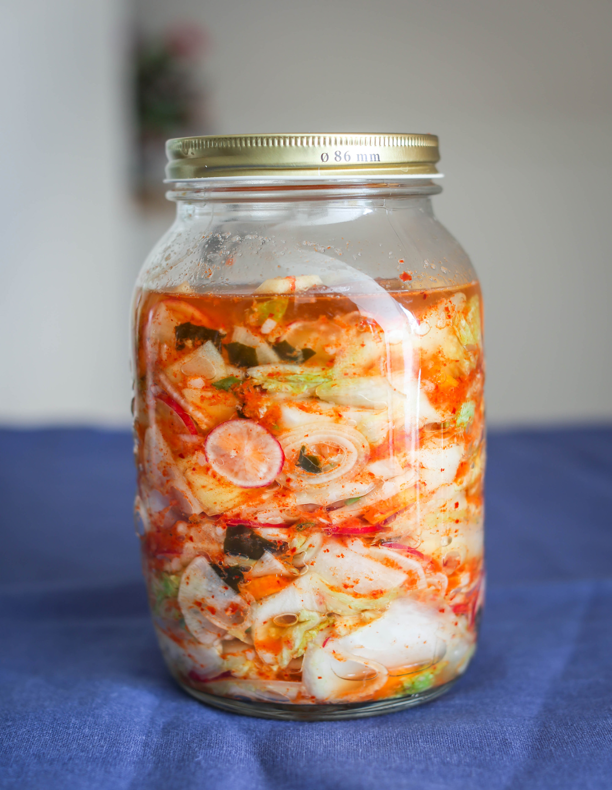

Кимчи в переводе с корейского — это ферментированные овощи. Кимчи готовится иначе, чем наша квашеная капуста, и традиционно состоит из 4-х элементов: основа, дополнительные овощи, заправка и украшение. Основа у кимчи может быть самая разная, в этом рецепте мы возьмем пекинскую капусту.
Ещё одна особенность кимчи состоит в том, что основу всегда замачивают в солевом растворе. Например, в нашем случае капусту необходимо заранее замочить на 5-6 часов.
Если у вас нет чего-то из дополнительных овощей, не страшно. Но заправка очень важна.
Кимчи может храниться в холодильнике более полугода. Чем равномернее температура ферментации, тем дольше кимчи сохранит свой вкус.